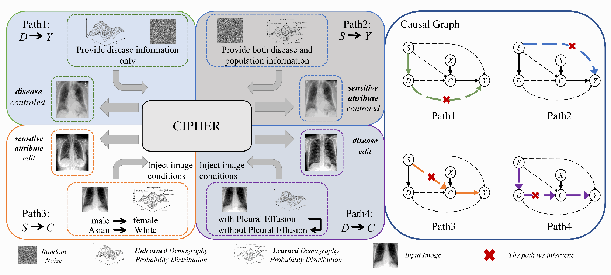
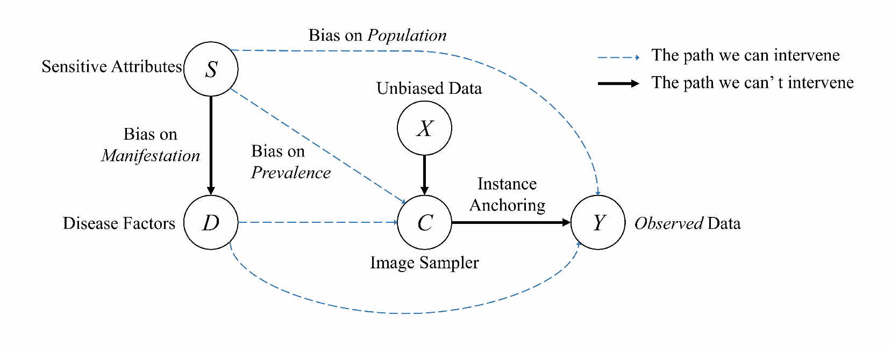
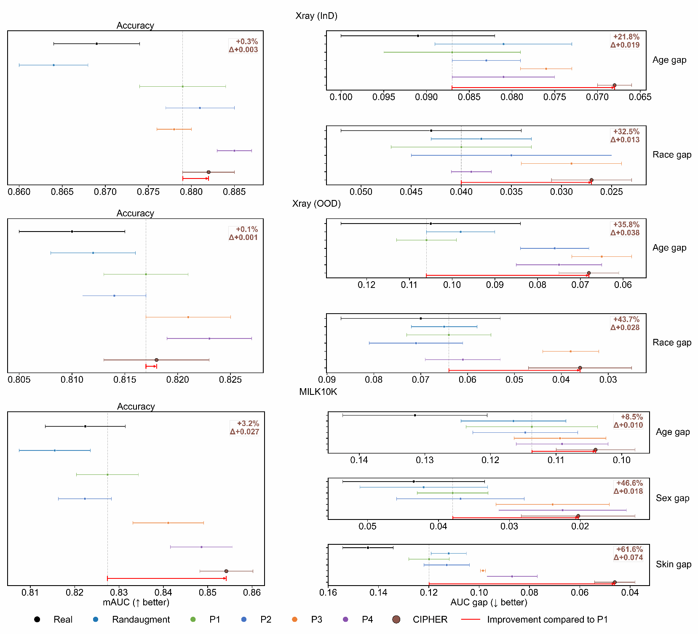

Disease-only generation
Condition on disease labels while omitting explicit sensitive-attribute tokens. This is the disease-conditioned baseline (P1).
y ∼ pθ(Y | cD(d′))
1 College of Biomedical Engineering, Fudan University, Shanghai, China
† Corresponding authors
arXiv preprint · July 2026
Deep learning models for medical diagnosis frequently exhibit substantial performance disparities across sensitive subgroups (e.g., race, sex), even when average accuracy is high. While generative data augmentation offers a route to mitigate this, existing strategies are suboptimal; they typically address only one or two dependency channels between sensitive attributes and image features. We formalize the medical image formation process via a structural causal model, revealing that sensitive attributes actually influence image content through four distinct pathways—a structural complexity neglected by prior works.
Based on this insight, we introduce CIPHER (Causal Intervention Pathways for Healthcare Equity and Robustness), a framework designed to systematically intervene on all four causal paths. To achieve this, CIPHER utilizes a diffusion backbone equipped with classifier-free guidance and null-text inversion. This technical design enables the faithful reconstruction of patient-specific anatomy while allowing for the precise, editable synthesis of counterfactuals required to break sensitive dependency chains.
We tested CIPHER using chest X-ray and dermoscopy benchmarks across both standard and shifted data distributions. By employing a multi-pathway intervention strategy, our model reduced worst-group disparities by an average of 35.8% compared to disease-conditioned synthesis baselines, while also improving total diagnostic accuracy.

Sensitive attributes can influence an image through appearance, disease manifestation, data availability, and their interaction. CIPHER makes these dependencies explicit.

Generate from noise to reshape coverage and subgroup composition.
Condition on disease labels while omitting explicit sensitive-attribute tokens. This is the disease-conditioned baseline (P1).
y ∼ pθ(Y | cD(d′))
Hold disease semantics fixed and vary sensitive attributes to reshape demographic composition.
y ∼ pθ(Y | cD(d) ⊕ cS(s′))
Use null-text inversion to preserve the context of a real image.
Edit sensitive-attribute tokens while keeping the disease condition fixed, creating matched counterfactual images.
y = E(x; (d, s) → (d, s′))
Change the disease condition while keeping sensitive attributes fixed and preserving patient-specific context.
y = E(x; (d, s) → (d′, s))
Evaluated on CheXpert Plus, MIMIC-CXR, and MILK10K, including out-of-distribution chest X-rays.

Overall fairness. The paper reports an average 35.8% reduction in worst-group disparities compared with disease-conditioned synthesis (P1), alongside improved diagnostic accuracy.
For in-distribution chest X-rays, CIPHER reduces the age and race gaps by 21.8% and 32.5%, respectively, relative to P1. Under distribution shift, the reductions reach 35.8% for age and 43.7% for race. On MILK10K, the largest reported improvement is a 61.6% reduction in the skin-tone gap.
Experiments use a DenseNet121 downstream classifier and a default 1:1 real-to-synthetic data ratio. Fairness is measured as the maximum AUROC gap across categories of each demographic attribute.
@misc{jia2026cipher,
title = {CIPHER: Causal Intervention Pathways for
Healthcare Equity and Robustness},
author = {Xinyu Jia and Weidong Guo and Wangyuan Zhao
and Yi Guo and Zeju Li and Yuanyuan Wang},
year = {2026},
eprint = {2607.02596},
archivePrefix = {arXiv},
primaryClass = {cs.CV},
url = {https://arxiv.org/abs/2607.02596}
}